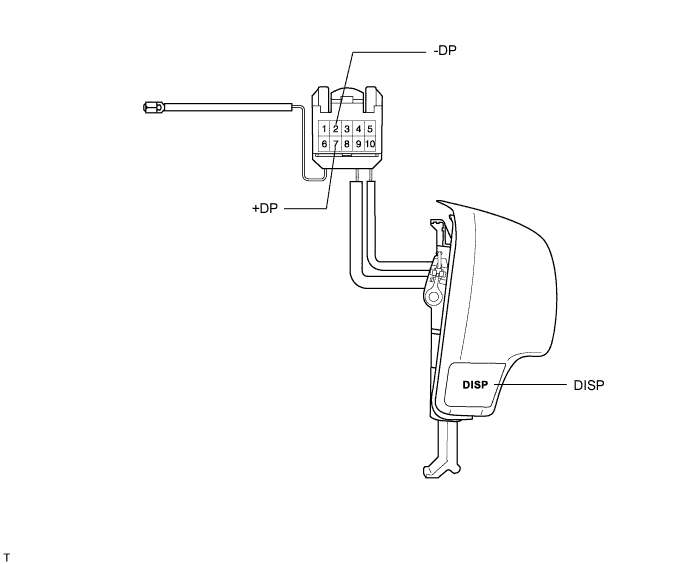
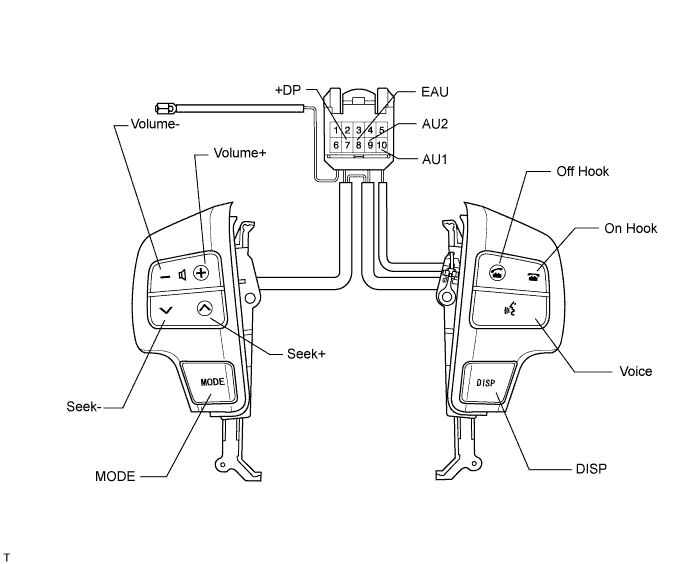
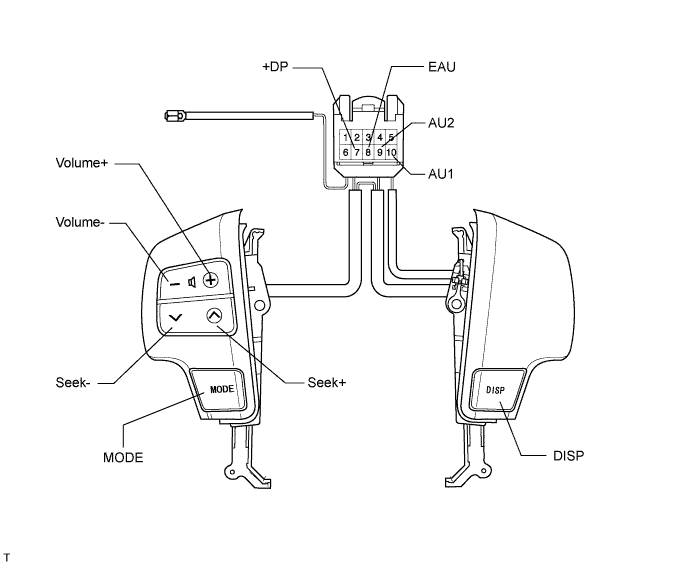

STEERING WHEEL > INSPECTION |
| 1. INSPECT STEERING PAD SWITCH ASSEMBLY (w/o Radio Receiver) |

| Tester Connection | Switch Condition | Specified Condition |
| 2 (-DP) - 7 (+DP) | DISP switch pushed | Below 1 Ω |
| 2. INSPECT STEERING PAD SWITCH ASSEMBLY (w/ Multi-display) |
Disconnect the z35 switch connector.

| Tester Connection | Switch Condition | Specified Condition |
| 10 (AU1) - 8 (EAU) | No switch is pushed | 100 kΩ |
| 10 (AU1) - 8 (EAU) | Seek+ switch pushed | Below 1 Ω |
| 10 (AU1) - 8 (EAU) | Seek- switch pushed | 330 Ω |
| 10 (AU1) - 8 (EAU) | Volume+ switch pushed | 1010 Ω |
| 10 (AU1) - 8 (EAU) | Volume- switch pushed | 3210 Ω |
| 9 (AU2) - 8 (EAU) | No switch is pushed | 100 kΩ |
| 9 (AU2) - 8 (EAU) | MODE switch pushed | Below 1 Ω |
| 9 (AU2) - 8 (EAU) | ON Hook switch pushed | 330 Ω |
| 9 (AU2) - 8 (EAU) | OFF Hook switch pushed | 1010 Ω |
| 9 (AU2) - 8 (EAU) | Voice switch pushed | 3210 Ω |
| 7 (+DP) - 8 (EAU) | DISP switch pushed | Below 1 Ω |
| 3. INSPECT STEERING PAD SWITCH ASSEMBLY (w/o Multi-display) |
Disconnect the z35 switch connector.

| Tester Connection | Switch Condition | Specified Condition |
| 10 (AU1) - 8 (EAU) | No switch is pushed | 100 kΩ |
| 10 (AU1) - 8 (EAU) | Seek+ switch pushed | Below 1 Ω |
| 10 (AU1) - 8 (EAU) | Seek- switch pushed | 330 Ω |
| 10 (AU1) - 8 (EAU) | Volume+ switch pushed | 1000 Ω |
| 10 (AU1) - 8 (EAU) | Volume- switch pushed | 3210 Ω |
| 9 (AU2) - 8 (EAU) | No switch is pushed | 100 kΩ |
| 9 (AU2) - 8 (EAU) | MODE switch pushed | Below 1 Ω |
| 7 (+DP) - 8 (EAU) | DISP switch pushed | Below 1 Ω |